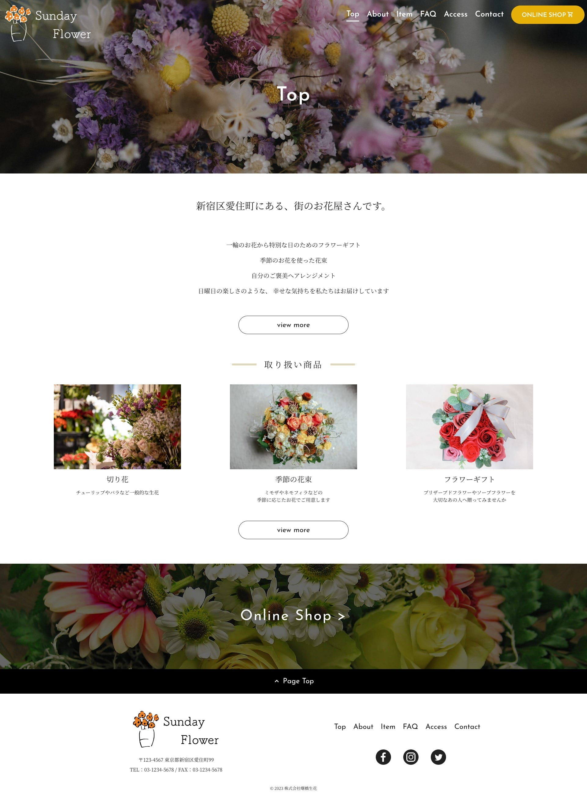
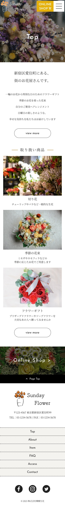

職業訓練校の課題の一環として、ヒアリングシートから架空サイトを作成しました。
新宿区愛住町に新規オープンするお花屋さん、という設定です。
レスポンシブ対応です。
URL
https://intp.site/1340/sunday_flower/top.html open_in_new
GitHub
https://github.com/Taichi-Sumi/TaichiSumi_Portfolio/tree/main/sunday_flower open_in_new
担当
ロゴ、ワイヤーフレーム、デザイン、コーディング、サーバーアップロード
制作期間
2週間
サイトの目的
お店の認知度向上と集客力増加
ターゲット
店舗から徒歩10分圏内に住み、インテリアやお花が好きな20~30代の女性
デザインについて
架空クライアントの要望が「おしゃれ、それでいてハードルの高さを感じないアットホームな雰囲気を出したい」というものでしたので、フォントの使い分け、手書き風ロゴデザインを使って表現しました。
お花がカラフルなのでHPは白と黒を基調にシンプルな色使いにしました。
あしらいなどにコーポレートカラーのオレンジを使用しています。
コーディングについて
初めての0からサイト作成でしたので、適切なマークアップやクラス名の付け方など、基本に忠実なコーディングを心がけました。
運用・保守面を考えた時、ソースコードは改善の余地があると感じたため、
これ以降のコーディングでは、閉じタグにもコメントアウトでクラス名を記載するようにしています。

